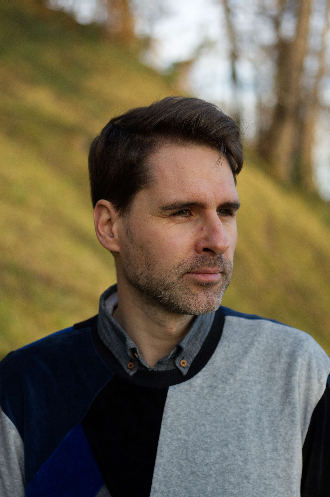

About
Jakob Gille is a composer of electroacoustic music who specializes in working with 3D audio and Ambisonics. His work blends electronic music with acousmatic elements, and field recordings.
Since 2018, he has organized the Into Sound concert series in Berlin for multichannel works. His work has been presented internationally through various concerts and sound installations, including concerts at Ars Electronica Linz, Apnées Festival in Grenoble, and ISAC in Pesaro. Additionally, he regularly participates in artist residencies and organizes workshops focused on Ambisonics.
He holds master degrees in Composition from the HfM Dresden and in Computermusic and Soundart from KUG and IEM Graz.
